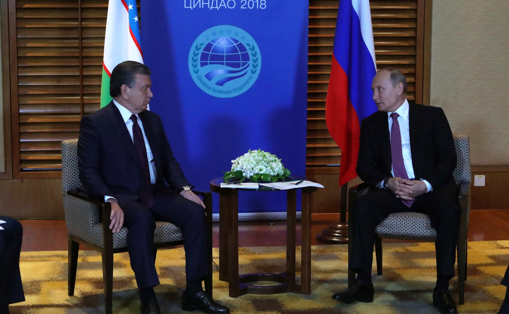

Мирзиёев предложил ШОС концепцию «Общее пространство развития до 2040 года»
На саммите в Бишкеке президент Узбекистана выдвинул предложения запустить на практике Банк развития ШОС, создать Карту промышленной кооперации, сформировать открытый многоязычный корпус данных и восстановить регулярный диалог с Афганистаном.

1 сентября 2026 года на заседании Совета глав государств Шанхайской организации сотрудничества в Бишкеке президент Узбекистана Шавкат Мирзиёев предложил разработать концептуальный документ о долгосрочном развитии организации под названием «ШОС-2040: общее пространство развития».
Саммит был посвящён 25-летию создания организации. На нём государства-члены приняли Бишкекскую декларацию и ещё 27 документов.
Важно не только эффективно решать возникающие проблемы, но и чётко представлять, какой мы хотим видеть организацию в долгосрочной перспективе.
— Шавкат Мирзиёев, президент Узбекистана (из перевода Gazeta.uz, 01.09.2026)
Содержание концепции
Согласно предложению лидера Узбекистана, главная цель концепции «ШОС-2040» — формирование взаимосвязанного и устойчивого пространства, в котором свободно перемещаются инвестиции, технологии и знания, реализуются крупные инфраструктурные и промышленные проекты, а прямые связи между регионами, бизнесом и людьми расширяются.
Взаимосвязанное и устойчивое пространство, в котором свободно обмениваются инвестициями, технологиями и знаниями.
— Шавкат Мирзиёев, президент Узбекистана (из перевода Gazeta.uz, 01.09.2026)
Перечень предложений
- Разработка концептуального документа «ШОС-2040»
- Создание Карты промышленной кооперации ШОС
- Практический запуск Банка развития ШОС
- Формирование открытого многоязычного корпуса данных ШОС
- Проведение в Ташкенте форума по искусственному интеллекту и новым цифровым решениям
- Создание совета по интеграции железнодорожных сетей
- Программа по водной и энергетической эффективности до 2035 года
- Программа на 2028–2030 годы по традиционному искусству и нематериальному культурному наследию
Карта промышленной кооперации
Мирзиёев предложил создать в рамках ШОС Карту промышленной кооперации. Согласно предложению, специальные экономические зоны, производственные мощности, рынки и логистические сети должны быть сведены на единой цифровой платформе. Платформа предназначена для предпринимателей, инвесторов и государственных ведомств.
Вместе с тем лидер Узбекистана предложил, чтобы Совет глав правительств ШОС начал отбор портфеля проектов в сферах транспорта, энергетики, промышленной кооперации и цифровой инфраструктуры. Отмечено, что эти проекты могут быть профинансированы после практического запуска Банка развития ШОС.
Идея создания Банка развития ШОС обсуждается уже несколько лет, однако банк пока не запущен в полной мере.
Искусственный интеллект и цифровое направление
Мирзиёев предложил, чтобы ШОС сотрудничала с китайской Всемирной организацией сотрудничества в области искусственного интеллекта. Была также выдвинута идея создания открытого многоязычного корпуса данных ШОС — предполагается, что он станет общим ресурсом для обучения моделей искусственного интеллекта на языках членов организации.
Узбекистан сообщил о готовности принять в следующем году в Ташкенте форум ШОС по искусственному интеллекту и новым цифровым решениям.
Вода, энергетика и продовольствие
Узбекская сторона предложила создать новый механизм ШОС, координирующий усилия по продовольственной, водной и энергетической безопасности. Предусматривается, что в его состав войдёт программа технологического сотрудничества по водной и энергетической эффективности, рассчитанная до 2035 года.
Водный вопрос имеет для Центральной Азии системное значение. Основной сток рек региона берёт начало в ледниках Тянь-Шаня и Памира; за последние десятилетия площади ледников сокращаются. В начале сентября правительство Кыргызстана вынесло на общественное обсуждение национальный план адаптации к климату до 2035 года.
Транспорт и железные дороги
Мирзиёев предложил создать совет по интеграции железнодорожных сетей государств — членов ШОС и отметил необходимость продолжать развитие международных транспортных коридоров.
Узбекистан — государство, не имеющее выхода к морю, и его экспортно-импортные потоки зависят от железных и автомобильных дорог, проходящих по территории соседних стран. Поэтому вопрос транспортных коридоров считается многолетним приоритетом Ташкента.
Предложение по Афганистану
На саммите отдельно был поднят вопрос Афганистана. Президент Узбекистана заявил, что сохранение мира и стабильности в Афганистане является основой развития региона.
Пришло время восстановить регулярный диалог между Шанхайской организацией сотрудничества и Афганистаном — для обсуждения широкого круга вопросов безопасности и экономического сотрудничества.
— Шавкат Мирзиёев, президент Узбекистана (из перевода Gazeta.uz, 01.09.2026)
Экономические связи с Афганистаном имеют для Узбекистана практическое значение: направление Термез — Мазари-Шариф, экспорт электроэнергии и проект Трансафганской железной дороги являются постоянной частью двусторонней повестки.
Культурное сотрудничество
Лидер Узбекистана предложил подготовить программу на 2028–2030 годы по сохранению и популяризации традиционного искусства и нематериального культурного наследия.
Контекст
В какой обстановке прошёл саммит
Бишкекский саммит состоялся 31 августа и 1 сентября и стал четвёртым случаем проведения ШОС в Кыргызстане. Заседание вёл президент Кыргызстана Садыр Жапаров. В нём приняли участие председатель КНР Си Цзиньпин, президент России Владимир Путин, премьер-министр Индии Нарендра Моди, президент Ирана Масуд Пезешкиан, президент Беларуси Александр Лукашенко и премьер-министр Пакистана Шехбаз Шариф. От государств-партнёров присутствовали руководители Турции, Азербайджана, Армении и Монголии, а также генеральный секретарь ООН Антониу Гутерриш. Для президента Узбекистана это стало площадкой для общения с десятками глав государств в течение нескольких дней.
В итоговом документе — Бишкекской декларации — были осуждены военные удары по территории Ирана, признаны права Ирана в рамках Договора о нераспространении ядерного оружия и повторена позиция против односторонних санкций. В документе отдельно подчёркнуто, что ШОС не является военно-политическим блоком и отвергает межблоковое противостояние. Предложения Узбекистана были выдвинуты именно в этих общих рамках — в направлении углубления экономического и технологического сотрудничества.
Практическое измерение предложений
Большинство выдвинутых Узбекистаном предложений пока находится на организационной стадии: разработка концептуального документа, создание совета, составление карты, подготовка программы. Какие из них будут внедрены на практике, зависит от договорённостей на уровне Совета глав правительств ШОС и соответствующих министерств. Решения ШОС принимаются на основе консенсуса — то есть согласие требуется от каждого государства-члена.
Примером может служить вопрос Банка развития ШОС. Идея создания банка была выдвинута Китаем несколько лет назад, однако проект не был запущен в полной мере из-за отсутствия единодушия между государствами-членами по вопросам долей, управления и валюты. Предложение Мирзиёева направлено на «практический запуск» банка и закрепление за ним конкретного портфеля проектов.
Место Узбекистана в ШОС
Узбекистан считается одним из государств-основателей ШОС — организация была создана в 2001 году в Шанхае с участием Китая, России, Казахстана, Кыргызстана, Таджикистана и Узбекистана. Позднее к ней присоединились Индия, Пакистан, Иран и Беларусь. В 2004 году Ташкент начал принимать исполнительный комитет Региональной антитеррористической структуры ШОС; эта структура до сих пор работает в столице Узбекистана.
В 2022 году Узбекистан принимал саммит ШОС в Самарканде. Тогда Ташкент также стремился включить в повестку организации вопросы транспортных коридоров, продовольственной безопасности и Афганистана. Предложения 2026 года считаются продолжением этой линии, но к ним добавилась тема искусственного интеллекта и цифровой инфраструктуры.
Следующий этап
По итогам саммита председательство в ШОС перешло от Кыргызстана к Пакистану. Очередное заседание Совета глав государств состоится в 2027 году в Исламабаде. Предложенный Узбекистаном форум по искусственному интеллекту и новым цифровым решениям предполагается провести в Ташкенте — однако его точная дата пока не объявлена.
ШОС была создана в 2001 году. Сегодня членами организации являются Китай, Россия, Индия, Пакистан, Иран, Беларусь, Узбекистан, Казахстан, Кыргызстан и Таджикистан. По итогам саммита председательство перешло от Кыргызстана к Пакистану; встреча 2027 года состоится в Исламабаде.
Через две недели после Бишкекского саммита президент Узбекистана отправился с государственным визитом в Южную Корею: 13–16 сентября в Сеуле прошли двусторонние переговоры и первый саммит «Корея — Центральная Азия». А в начале сентября Мирзиёев совершил официальный визит в Сербию.